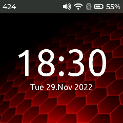
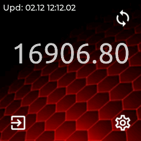
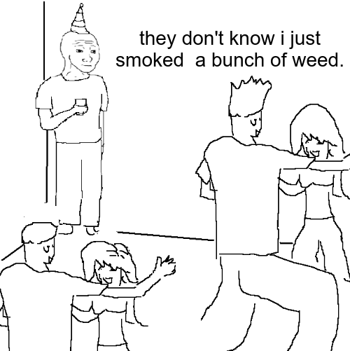
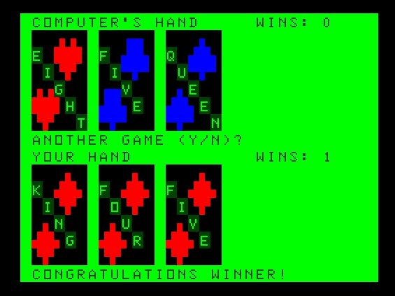

A rainy Saturday in the lab
I recently obtained an esp32 based smartwatch and have succeeded in building a stable firmware that runs freebasic. While I did get jurov's recipe for ulisp working, I wanted to still be able to use the gui when lisp is running, so enter fb-lisp.
tl;dr - I mirrored the freebasic code here.
Working:
Wifi no longer crashes webserver, so triggering screenshots via wget is possible again. Time and BTC to local fiat price sync operational.


Also this past week I finally shut down the server running busybot to pestnet. I can't justify the server for it and want to focus on making something more stable in the bot arena so it can read me logs back, etc.
Meanwhile on Pestnet, Lord cringe makes an appearance, so hurr-durr read-only for now!

Blatta performance on the pogoplug is sub-optimal, but runs much more efficiently under termux (as does smalpest) so I will switch back over when I have time to chroot the armv7 device again.
Besides, it's a rainy Saturday morning and I'd rather play blackjack on the mc10 anyway.
